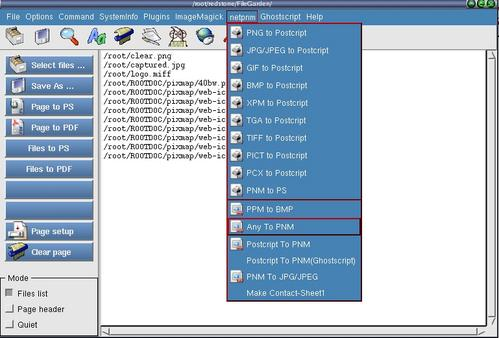

"ImageMagick" menuitem
"netpnm" menuitem

Step 1 : Click "Clear page" to clear the editor if needed.
Step 2 : Click "Select files ..." button to open a open-file dialog.
Step 3 : Double click on a file or multi-select multiple files
to display a file listing on the editor page.
Step 4 : Click "ImageMagik" or "netpnm" menuitem and choose a command
to process the file listing.
note : The current directory of the xfgcommander is the current
directory of the saving location for all files saved.They will be highlighted
after you close a dialog or executed a menu command.
----------------------------------------------------------------------
To insert new "ImageMagick" command menuitem by manual editing
Step 1 : Shutdown FileGarden.
Step 2 : Edit the file " /opt/redstone/FileGarden/xfg.conf "
note : File path might not be the same as your installation.
There is no way to edit this file when FileGarden is running.
----------------------------------------------------------------------
example 1 : To add in new command into the "ImageMagick" or the "netpnm"
menuitem.
command : " /usr/bin/convert -size 120x120 %in -resize 120x120 +profile "*" %out "
To covert and resize image files to 120x120 pixel
...
...
...
[ImageMagick]
To 120x120=/usr/bin/convert -size 120x120 %in -resize 120x120 +profile "*" %out
To 48x48=/usr/bin/convert -size 48x48 %in -resize 48x48 +profile "*" %out
To 32x32=/usr/bin/convert -size 32x32 %in -resize 32x32 +profile "*" %out
To 21x21=/usr/bin/convert -size 32x32 %in -resize 21x21 +profile "*" %out
To 16x16=/usr/bin/convert -size 32x32 %in -resize 16x16 +profile "*" %out
To 120x120.JPEG=/usr/bin/convert -size 120x120 %in -resize 120x120 +profile "*" %out.jpg
To Postcript=/usr/bin/convert -page A4+0+0 %in %out.ps
To Monochrome.JPEG=/usr/bin/convert -monochrome %in %out.mono.jpg
-=
MontageImages-NoFrame=/usr/bin/montage +frame +shadow +label -tile 5x5 -geometry +0+0 &in &outcontact.png
MontageImages-WithFrame=/usr/bin/montage &in &outcontact.png
...
...
...
note : to insert a seperator use " - "
use " %in " = input of files from the file listing on the editor.
use " %out " = output of the resulting file size/format with the same filename+extension
use " &in " and " &out" to process/convert multiple files to a single file.
do not use any spaces , example : " &out.png " is different from " &out .png "
----------------------------------------------------------------------
example 2 : To add in image icon for the menuitem
...
...
...
[ImageMagickImage]
To 32x32=
To 16x16=
To 120x120.JPEG=/opt/redstone/FileGarden/image/gnome-image-jpeg.png
To Postcript=/opt/redstone/FileGarden/image/gnome-application-postscript.png
...
...
...